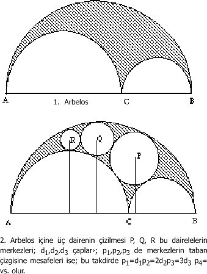

(300'lerden 529'a kadar)
Tam bir değerlendirmesi yapılamayan prehistorik döneme ait problemleri hariç tutarak, Yunan kültürünü Homeros (dokuzuncu ya da sekizinci yüzyıllar diyelim) ile başlatabiliriz; Yunan bilimi biraz daha sonra, Tales ve Pitagoras ile başlar (altıncı yüzyıl). Öklid (M.Ö. 300) ile başlayan ilk konumuz Yunan kültürünün Hellenistik adı verilen oldukça geç bir safhasını incelemiştir. İkinci konumuzda Batlamyus'u incelemek için, dört yüzyıldan daha büyük bir atlama yapmak zorunda kaldık; şimdi 150 yıllarında başlayıp 350 yıl sonra sona eren bir dönemi inceleyeceğiz. Bu (uzun dönem), antik Yunan kültürünün uzunluğunu, sürekliliğini ve tükenmez çeşitliliğini bir kere daha göstermektedir. Batlamyus'un Roma Dünyası Öklid'in İskenderiye'sinden çok farklıydı ve şimdi ortaya koymaya çalışacağım dünya da son derece farklı bir çevredir.
Roma İmparatorluğu ve Hıristiyanlık aşağı yukarı aynı zamanlarda doğmuştu. Dördüncü yüzyılın başlarında Roma İmparatorluğu süratle gerilerken Hıristiyanlık ilerliyordu, ve karşılıklı olarak hem eski Pagan inancının yavaş yavaş ölüme gittiğine ve hem de Hıristiyanlığın hayatta kalmaya ve genişlemeye hazırlandığına şahit olmaktayız.
Bu bölüm üç kısma ayrılacaktır: Yunan matematiği, Yunan tıbbı, ve felsefî ve dînî altyapı. Birinci bölüm yerine bu son bölümde altyapıdan bahsetmemin sebebi daha sonra anlaşılacaktır.
1. Yunan Matematikçileri:
Batlamyus'un büyük çabalarını bir yüzyıldan fazla bir fasıla takip etmişti. Bu sebepten dolayı da bir sonraki büyük matematikçi ortaya çıktığında, kendini Matematik Kolleksiyonu (Synagògè) başlığı altında daha önceki eserlerin bir özetini hazırlamak zorunda hissetti. Bu matematikçi İskenderiyeli Pappos idi. Eski bir yazmanın kenarına düşülmüş bir haşiyeye göre, Pappos, Diocletian'ın (imparatorluğu 284-305) yönetimi sırasında yaşamış ve bu yüzden cebirci Diophantos[89] gibi onu da üçüncü yüzyıla ait bir kimse olarak kabul etme eğilimi ağır basmıştır; ancak Canon Rome'[90] göre Pappos'un Almagest'e yazdığı şerh muhtemelen 320'den sonradır ve Matematik Kolleksiyonu ise daha da geç bir tarihte yazılmıştır. Pappos, Öklid ve Batlamyus üzerine şerhler yazmıştır, ancak onun ana eseri bahsetmiş olduğumuz Synagògè'dur; bunun büyük bir kısmı günümüze ulaşmıştır. Bu eser sekiz kitaba bölünmüştür; I. kitap ve II. Kitabın 1'den 13'e kadarki bölümleri, IV. kitabın girişi ve belki de VIII. kitabın sonu hariç, eserin diğer kısımlarına sahibiz. Bu eseri analiz etmek güçtür; çünkü çeşitli matematik konularına hasredilmiş ve eski ve yeni pek çok konuyu biraraya getirmiştir. Pappos, Öklid ya da Batlamyus gibi bir hoca değildi; ama bütün Yunan matematiğinden haberdar olan ve kendine mahsus biçimde Yunan matematiğini özetlemeye çalışan âlim bir kişiydi. İyi bir yorumcuydu; çünkü en büyük öncüleri ile aynı düzeyde bilgiye sahipti ve kendisi zekice teorem ve problemler ekleyebilmişti; ancak çok metodik değildi. Synagògè'un genel terkibinden anlayabildiğimiz kadarıyla, matematik klasikleri üzerinde çalışmış, yeni problemler keşfetmiş ve çözmüş, ve sonra da bunları sekiz kitaba tasnif etmişti. Her kitabın başında, problem gruplarının felsefi, matematiksel ve tarihi ortamını tayin eden genel fikirler bulunur. Bu tanıtım girişleri matematik tarihçileri için çok ilginçtir, ve bu sebeple, bunlardan üç tanesinin (I., II. ve IV. kitapların girişleri) kaybolması üzücüdür. Bunlar bir gün Arapça olarak ortaya çıkabilir.
Aşağıdaki notlar Synagògè'un muhtevasını kitap kitap kabataslak gösterir.
II. Kitap (14-16. bölümler): Apollonius'un büyük sayıları onbinin kuvvetleri cinsinden yazma ve bunlarla işlem yapma metodu üzerine şerh.
III. Kitap. Problemin tarihi: Verilen iki doğru parçası arasında (kurulan) sürekli orantıda iki orta terimi bulmak. Geometri problemlerinin üç sınıfa ayrılması. (1) düzlem, (2) cisim, (3) çözülebilmeleri için daha yüksek eğrilerin kullanımını gerektirenler. Erycinos'un paradokslarının vesile olduğu nadir teoremler (yoksa bilemezdik). Verilen bir küre içine beş düzgün yüzlü cisim nasıl çizilir?
IV. Kitap: Hipotenüsün karesi hakkındaki Pitagor teoriminin genelleştirilmesi. Arbelos (ayakkabı tamircilerinin kullandığı yarı dairesel bıçak) içine çizilen daireler, Arşimet'in bir kitabı üzerine şerh (Yunancası kayıp, Arapçası mevcut). Arşimet'in spiralinin, Nicomedes'in konkoid'inin, quadratrix'in, küresel spiralin incelenmesi, herhangi bir açının üçe bölünmesi, vs. Bu, Arşimet'inkinden farklı bir integrasyon (spiral için) metodunu ihtiva eder.

V. Kitap: Zenodoros (M.Ö. II-1)'dan türetilmiş izoperimetri. İlginç önsözü, bal peteklerini büyük bir düzenlilik ve muhteşem bir mekân ekonomisi ile inşa eden arılara atıfta bulunur. Pappos yalnızca düzlem geometriye ait problemlerle uğraşmamış, verilen bir yüzeyde kürenin en büyük hacme sahip olduğunu da ifade etmiştir.
VI. Kitap: Esas olarak astronomi üzerine olan bu bölümü, Autolycos (M.Ö. IV-2), Aristarkos (M.Ö. III-1), Öklid (M.Ö. III-1), Theodosios (M.Ö. I-1) ve Menelaos (I-2) gibi bazı "küçük astronomi" yazarlarını etkilemiştir.[91]
VII. Kitap Kolleksiyon'un en uzun kitabıdır; bu kitaptan sonra en uzun kitaplar III, IV ve V. kitaplardır, ancak VII. kitap neredeyse bu üçünün biraraya gelmiş hali kadardır. Bu kitap tarihçiler için de çok önemlidir; çünkü Aristaios (M.Ö. IV-2), Öklid, Apollonios ve Eratosthenes'in pek çoğu kayıp olan eserlerini ele alır.[92] Kendi başlığına göre, "topolojik cisimleri" (ho topos analyomenos) çözümlemeye yardımcı önermeleri ihtiva eder ve ileri düzeydeki öğrenciler için geometrik metot hakkında bir çeşit ders kitabıdır. Bu kitap (VIII. kitap gibi) Pappos'un oğlu Hermodòros'a atfedilmiştir. Analiz ve sentezi tarif ettiği ve açıkladığı bir önsözden sonra, belli bazı noktaları vurgulayarak, bu antik eserlerin her biri ile ilgilenir. Örneğin, Pappos'un şu meşhur problemini burada görmekteyiz: "Bir düzlemde birkaç doğru parçası verilsin, bu doğru parçaları ile belli bir açı oluşturacak biçimde bir noktadan başka doğru parçalarının çizilmesi halinde, belli dilimlerin çarpımlarının, geriye kalan dilimlerin çarpımına orantılı olacak şekilde, bu noktanın yerinin bulunması". Bu problemin kendisi çok önemlidir; ancak daha da büyük önemi, Descartes'in zekasını harekete geçirmiş ve onun (1637) kitabında açıkladığı koordinatlar metodunu bulmasına yol açmış olmasıdır. Bir tohumun onüç yüzyıldan daha fazla uykuya yattığını ve ondan sora da fevkalade bir çiçeklenmeye, yani analitik geometrinin ortaya çıkışına yardım ettiğini düşünün! Bir başka önerme de ağırlık merkezi metodunun tohumu olmuştu; bu önerme Guldin teoremine eşdeğer bir teoremi ispatlar: "Eğer bir yayın kuşattığı bir düzlem bir eksen etrafında döndürülürse, bu dönüşle elde edilen hacim, ağırlık merkezinin çizdiği yolun uzunluğu ile alanın çarpımına eşit olacaktır". Cizvit papaz Paul Guldin bu teoremi 1640 yılında daha açık bir biçimde yayınlamıştır.[93]
Pappos'un adını taşıyan bir diğer problem Kolleksiyon'da yer almaz. Bir açının açı ortayı üzerinde bir A noktası verilsin; bu A noktasından, açının her iki kenarı üzerinde sona eren bir a dilimi çizmek. Bu problem, muhtemelen, dördüncü dereceden bir denkleme götürmesi ve ancak cetvel ve pergel ile çözülebilmesi sebebiyle olağanüstü bir kadere sahip olmuştur.[94]
VII. kitabın en hayret verici kısmından henüz söz etmedik. Apollonios'un belirlenmiş bir dilim (diorismene tome) hakkındaki kayıp eseri ile ilgilenirken, Pappos noktaların involütünü açıklar.
VIII. kitap ise mekanikle ilgilidir ve büyük ölçüde İskenderiyeli Heron'dan alınmıştır. Heron'u izleyen Pappos, teorik mekaniğin çeşitli kısımlarını (geometri, aritmetik, astronomi ve fizik) ve pratik mekaniği ayırmıştır. Bu kitap Yunan mekaniğinin zirvesi olarak kabul edilebilir ve Hellenistik dönem mekanikçilerinin[95] ele aldıkları problemlerin büyük çeşitliliğini anlamamıza yardımcı olur. Pek çok ihtiyacın tatmin edilmesi gerekiyordu: Ağır cisimlerin hareketi, saldırı veya savunma amaçlı savaş makinaları, su boşaltma makinaları, otomatlar ve kendi kendine işleyen cihazlar; su saatleri ve hareketli küreler. Pappos, dişlilerin ve bir çarkın dişlerine göre hareket eden silindirik bir helezonun (cochlias) yapılışı gibi pratik problemlerle ilgilenmişti; fakat verilen iki doğru parçası arasındaki iki orta oranın bulunması, ağırlık merkezlerinin belirlenmesi, verilen beş noktadan geçen bir koniğin çizilmesi gibi matematiksel metotlar daha da fazla ilgisini çekmişti. Onun matematikçi yönü o kadar kuvvetliydi ki şunun gibi teorik problemleri çözmeye çalışmıştı: Bir çemberin alanı yedi eşit düzgün altıgen ile nasıl doldurulur?
Eğer VIII. kitap Yunan mekaniğinin zirvesi ise, bütün Kolleksiyon'un da bir hazine olduğunu ve belli bir ölçüde Yunan matematiğinin doruk noktasını temsil ettiğini söyleyebiliriz. Bizans döneminde bu esere çok az şey ilave edilmiş ve Yunan bilimi hakkındaki bilgisini yüksek matematiğe duyduğu ilgiyle birlikte kaybeden Batı Dünyası Pappos'un biraraya getirmiş olduğu zengin materyalden istifade edememişti. Pappos'un toplamış olduğu veya keşfettiği fikirler Batılı matematikçileri çok geç tarihlere kadar harekete geçirmemiş, ancak sonunda harekete geçirdiği zaman, modern matematiğin, yani analitik geometrinin, projektif geometrinin, ağırlık merkezi metodunun doğuşuna yol açmıştır. Pappos'un küllerinden bu doğuş ya da yeniden doğuş dört yıl içinde (1637-40) gerçekleşti. Böylece, sanki arada hiç bir şey olmamış gibi modern geometri ile antik geometri arasında bağlantı kurulmuş oluyordu.
Pappos, antik bilimin son döneminin en büyük matematikçisiydi ve Bizans döneminde kimse onunla rekabete girişememişti. Antik dönemin son matematik deviydi. Mamafih, çok seçkin bir matematikçi grubu onu izlemiştir; bu matematikçiler gerçekten o kadar kalabalıktılar ki, her birisinden söz etmek mümkün değildir; ancak çok kısa bir şekilde bahsedeceğiz. Antinoopolisli Serenos (IV-I) bir diğer Mısır Yunanlılarındandı; 122 yılında Nil'de boğulan güzel Antinos'un anısına Hadrian'ın kurmuş olduğu Orta Mısırdaki bu kentte doğmuştu. Serenos'un İskenderiye'de öğrencilik yaptığını ya da yetiştiğini ve herhalükârda İskenderiye okulu ile, döneminin bu en büyük matematik okulu ile, hem de ona en yakın olan bu okul ile teması olduğunu kabul etmek zorundayız. Apollonios'un Konikler'i üzerine bir şerh ve silindir ve koni kesitleri üzerine iki orijinal eser yazmıştı.
Ve şimdi de iki meşhur İskenderiyeli baba kızı, Theon (IV-2) ve Hypatia (V-1)'yı inceleyelim; her ikisi de Müze'de hocalık yapmışlardı. Theon Öklid'in Elementler'ini ıslah etti ve Almagest üzerine çok ayrıntılı bir şerh yazdı; Batlamyus'un kurduğu altmışlık kesirleri geliştirdi. Hypatia ise babasının Öklid'in III. kitabı üzerine yapmış olduğu şerhi ve müteakiben Almagest şerhini düzeltti. Hypatia babasınınkinden daha ziyade Mezopotamya yöntemlerine yakın olan altmış tabanlı bölmeye ilişkin yeni bir yöntem geliştirmiş olabilir; ancak bunun ne kadarının kime ait olduğunu kesin olarak bilmek mümkün değildir. Hypatia'nın Apollonios, Batlamyus'un Kanun'u (Kronoloji) ve Diophantos üzerine şerhlerinin hepsi kayıptır; ancak Kireneli Synesios'un (V-1)[96] yazmış olduğu şükran dolu mektupları ve hepsinin ötesinde, 415 yılında işkence yapılarak öldürülüşü onu ölümsüzleştirmiştir. Hypatia, ilk bayan matematikçi ve bilimin ilk şehitlerinden birisi olma gibi iki şerefe ulaşmıştı.
Hypatia'nın ölümünden sonra, İskenderiye'deki matematik (Pagan) okulunda bir sükunet dönemi olmuştu, ve buna da şaşmamak lazım. Takib eden yüzyıldaki liderler ise Ammonios ve Philoponos idi. Hermias'ın (VI-1) oğlu Ammonios, Proklos'un danışmanlığında Atina'da çalışmış, fakat İskenderiye okulunu da yenilemek için çaba harcamıştı; bazı öğrencilerinin liyakatine dayanarak büyük bir hoca olduğunu tahmin edebiliriz. Matematiği dört branşa bölmüştür: Aritmetik, geometri, astronomi, müzik; bu bölümleme Latin dünyasında quadrivium[97] adı ile tanındı. Öğrencisi Joannes Philoponos (VI-1)[98] aslında bir filozofdu; ancak usturlab üzerine ilk eseri ve Nicomachos'un Aritmetik'i üzerine bir şerh yazmıştır.
Artık Atina'ya dönebiliriz. Atina Roma İmparatorluğunun bir eyalet kenti haline geldiği zaman, orada bulunan okullar Müze'nin gölgesinde kalmıştı; ancak yine de Hellenizmin kutsal merkezi olmaya devam etti. Siyasi ve ticari gücü kalmamıştı; ama felsefe vardı. Fakat şunu da söylemeliyiz ki, dördüncü yüzyılın sonunda dört tane önemli okuldan yalnızca bir tanesi ayakta kalmıştı. Aristocu, Stoacı ve Epikürcü okullardaki baş hocaların veya önderlerin isimlerini belirleyemiyoruz. Yalnızca Akademi'deki başhocaların listesi (diadoche) muhafaza edilmiştir. Merakımızı tatmin etmek için bunların isimlerini sıralayalım: Priscos (yaklaşık 370), Nestorios'un oğlu Plutarchos (ölm. 431)[99], İskenderiyeli Syrianos (V-1), Larissalı Domninos (V-2), sonuncu Proklos (V-2), Sichemli Marinos (V-2), İskenderiyeli Isidoros, Hegias, Zenodotos ve Damascios (VI-1).
Bu liste ile ilgili iki noktaya işaret etmeliyiz. İlki, bu liste muhtemelen tamamdır[100] ve bu az çok bir devamlılık olduğunu ortaya koyar; fakat listedeki isimlerin hepsi budur; bilinmeyen kimselerin uğursuz bir şeylere işaret ettiğini söyleyebiliriz. Priscos, Hegias ve Zenodotos kimdi? Akdemi'nin son başhocasına gelince, adını bile bilmiyoruz; çünkü Damascios yalnızca Şamlı anlamına gelir. İkinci nokta, bu listenin tetkiki Atina ve İskenderiye okullarının birbirine oldukça yakın olduklarını gösterir. Ammonios, Proklos'un öğrencisi ve Damascios'un hocası idi; düzenli bir usta-çırak ilişkisi vardı. İskenderiyeliler Atina'da ve Atinalılar ise İskenderiye'de öğrenim görmüşlerdi ve Akademi'nin hiç değilse iki başhocası, Syrianos ve Isidoros İskenderiyeliydiler.
Akademi'nin parlak bir matematik okulu olma özelliğinin kalmadığı açıktır. Hocaların ve öğrencilerin büyük çoğunluğu yalnızca Yeni Platoncu aritmetik ile, yani sayı mistisizmi ile ilgileniyorlardı. Mamafih, Larissalı Domninos bu akıma karşı tepki göstermeye ve Öklidçi sayılar teorisini canlandırmaya çaba harcamıştı. Akademi'nin varlığını sürdürdüğü dönemin son yüzyılında en büyük başhocası Proklos idi. Proklos menşe olarak Likyalıydı;[101] ama Bizans'ta doğmuş, İskenderiye'de öğrenim görmüştü; ancak Hypatia'nın bilgeliğinin kaynaklarından yararlanmak için artık çok geç olduğu için Atina'ya döndü ve 485'de ölünceye kadar Akademi'nin başhocalığını yaptı. Proklos'u en büyük methiyelerle yüceltmek isteyen kimseler ona "Yeni Platonculuğun Hegel'i" lakabını verdiler; o, felsefe, astronomi ve matematikle ilgilendiği halde, bir filozof olarak, bir astronom ya da matematikçi olduğundan muhakkak ki çok daha etkiliydi. Ama yine de Batlamyus astronomisine yazmış olduğu giriş ve Elementler'in I. kitabına yaptığı şerh için ona minnettarlık borcumuz var. Bu şerh, Öklid'in kaynaklarının tarihi açısından oldukça değerlidir; bize ulaşan malumatın çoğu iki Rodoslunun, Eudemos (M.Ö. IV-2) ve Geminos'un (M.Ö. I-1) kayıp eserlerinden elde edilmiştir. Proklos olmasaydı, bizim antik geometri hakkındaki bilgimiz, olduğundan çok daha fakir olurdu.
Sichemli Marinos Öklid'in Data'sına (Geometri Eksersizleri) bir önsöz yazmıştır; ancak Damascios kendisine atfedilen "Öklid'in XV. Kitabı"nı yazmamıştır.
Altıncı yüzyılda Atina'da yetişen en büyük matematikçiden henüz söz edilmedi; çünkü Akademi'nin başhocası değildi; bu kişi Simplicios'dur (VI-1). Onun Aristo şerhleri mekanik ve astronomi ile ilgili pek çok konuyu içerir, Öklid'in I. kitabına da bir şerh yazmıştı. Kilikyalı Simlicios ve Mısırlı Philoponos, dönemlerinin göz alıcı bilim adamlarıydılar.
Akademi ile ilgili olarak son değerlendirmemiz şudur: Üçüncü yüzyılın sonundan itibaren burası artık Atina'da kalan yegane felsefe okulu idi; ve bu durum kendi sağlamlığından kaynaklanıyordu. Yalnızca orada hakim olan felsefe Yeni Platoncu felsefe olduğundan değil, fakat aynı zamanda diğer felsefelere de kapılarını açtığı ve bunların hepsini tartışıp, birleştirmeye hazır olduğu için de Akademi yüzyıllar boyunca süren Platonculuğunu bırakmıştı. Syrianos, Proklos, Marinos Aristo üzerine; Simplicios ise Epictetos üzerine şerhler yazmışlardır.
İskenderiye ve Atina'daki matematik okullarına ilaveten, altıncı yüzyılın ilk yarısında İstanbul'da yeni bir okul daha açılmıştı; bu okul hakkında Miletli Isidoros ve öğrencisi Ascalonlu Eutocios bilgi verirler; ancak onların asıl faaliyetleri muhtemelen Akademi'nin kapatılışından sonra başlamıştır.[102] İstanbullu matematikçiler büyük bir olasılıkla Hıristiyandı; Philoponos ise Monofizitti.
Bir düzine matematikçiden söz etmiş bulunuyoruz. Bunların her birinin oluşturduğu geleneği incelemek yerine, kendimizi beş matematikçiyle, yani Pappos, Serenos, Theon, Hypatia ve Proklos ile sınırlandıracağız.
Pappos'un oluşturduğu gelenek, Ermeni literatürünü işe karıştırdığı için istisnaîdir; çünkü İskenderiye'de eğitim görmüş olan Choreneli Moses (V-1) Pappos'un bu konudaki kayıp eserine dayanan Ermenice bir Coğrafya yazmıştı. Almagest şerhini Theon tafsilatlandırmıştı; onun Öklid'in Elementler'i için yazdığı şerhi Proklos ve Eutocios kullanmışlardı. Bu şerhin, Yunancası kaybolmuş bulunan X. kitap ile ilgili kısmı Ebû Osman el-Dimişkî'nin (X-1) Arapça tercümesi ile günümüze intikal etmiştir. Ebû'l-Vefâ (X-2) düzgün çok yüzlülerle ilgili bilgisini Pappos'un Kolleksiyon'undan elde etmişti.
Almagest'in ilk Yunanca edisyonu (Basel, J. Walderus, 1538)[103] Pappos'un V. kitap için yazdığı şerhi ihtiva eder.
Kolleksiyon'un ilk basılı edisyonu, Federigo Commandino'nun Yunancadan Latinceye tercümesiydi (Pesaro, Hier. Concordia, 1588); bu tercüme 1589'da Venedik'te ve 1660'da da Bologna'da yeniden basılmıştır. Yunanca metnin ilk tam edisyonu ancak üç yüzyıl sonra çıktı; bu edisyonu Friedrich Hultsch mükemmel surette hazırlamıştır (3 cilt, Berlin, 1876-78).[104]
William Thomson: Öklid'in Elementler'inin X. kitabına Pappos'un yazdığı şerh, Arapça metin ve tercüme (Cambridge, Harvard, 1930; Isis 16, 132-36).
Adolphe Rome: "Pappus, Commentaire sur les livres 5 et 6 de I'Almageste" (Studi e testi 54, Vatican, 1931; Isis 19, 381), Yunanca metin.
Paul Ver Eecke: Pappus. La Collection Mathématique (2 cilt, Bruges, 1933; Isis 26, 495), Fransızca tercüme.
Serenos'un oluşturduğu erken gelenek Apollonios'un geleneği ile hem Yunancada hem de Arapçada karışmıştı. İlk basılı metin, Federigo Commandino'nun Apollonios neşrinde (Bologna, Alex. Benatius, 1566) yayınladığı Latince tercümeydi. İlk Yunanca edisyon, Edmund Halley'in yayınladığı Apollonios'un mükemmel Yunanca-Latince edisyonunda (Oxford, 1710) yer almıştı. Yeni bir Yunanca-Latince edisyonu J. L. Heiberg yayınladı (Leipzig, 1896). Fransızca tercümesini ise Paul Ver Eecke gerçekleştirdi (208 sayfa, Bruges, 1929; Isis 15, 397)
Theon'un Almagest şerhi kızı Hypatia'nın düzelttiği biçimiyle Bizanslı matematikçiler Nicolaos Cabasilas (XIV-2) ve Theodoros Meliteniotes (XIV-2) tarafından biliniyordu. Bu şerh, Almagest'in ilk Yunanca edisyonunu ihtiva ediyordu (Basel, 1538). Fransızca tercümesiyle birlikte yeni bir Yunanca edisyonu Nicolas Halma tarafından ortaya kondu (Paris, 1813-16). Yunanca metnin örnek bir edisyonuna 1936 yılında Adolphe Rome başladı, bu edisyon I-IV. kitapları kapsıyordu (Vatican, 1936-1943; Isis 28, 543; 36, 255); devamı öğrencisi Joseph Mogenet tarafından hazırlandı.
Proklos, matematikçi olmaktan çok bir felsefeci, teolog ve hatta fizikçi olarak popülerdir ve yazılarının oluşturduğu gelenek çok karmaşıktır. Burada onun yalnızca matematik çalışmalarını ele alacağız. Isaac Argyros (XIV-2) onun Nicomachos'un Aritmetik'ine yazmış olduğu şerhi düzeltmiştir. Elementler'in I. kitabına yazdığı şerh Simon Gryneus'un Öklid'in Yunanca edisyonunda (Basel, Hervagius, 1533) ilk defa Yunanca basıldı. Latince edisyonlarını Franciscus Barocius (Padoa, Gratiosus Perchacinus, 1560) ve Federigo Commandino, Öklid edisyonu ile birlikte (Pesaro, 1572) hazırlamışlardı. Kritik Yunanca edisyonu Gottfried Friedlein (515 sayfa, Leipzig, 1873) hazırladı. Fransızca tercümesini de Paul Ver Eecke (396 sayfa, Bruges, 1948; Isis 40, 256) yaptı.
Hellenizmin son matematik başarılarının oluşturduğu gelenek en azından iki açıdan dikkat çekicidir. İlkin, bu gelenek Pappos'un durumu hariç, Arapça yolunu hemen hiç işe karıştırmamıştır. Bu matematikçilerin yeniden keşfedilmeleri büyük ölçüde Bizanslı araştırmacılar ve daha sonra da Rönesans araştırmacıları sayesinde gerçekleşmişti; bunun neticesinde Yunanca basılı edisyonlar Serenos'un durumu hariç, Latince edisyonlardan önce hazırlanmıştı. Latin geleneği göz önünde bulundurulduğu taktirde, aslan payı Urbinolu Federigo Commandino'nundur; (1509-75) özellikle de Pappos'un Kolleksiyon'unu ilk defa yayımlaması çok önemlidir; bu yayının daha sonraki matematikçiler üzerindeki etkisi oldukça büyük olmuştur.
2. Bizans Tıbbı
Kolaylık sağlaması için yalnızca bir doktoru, bu dönemin en büyük doktoru[105] olan Oribasios'u (IV-2) incelemek en iyi yol olacaktır. Ona Yunanlı veya Hellenistik demekten ziyade Bizanslı diyeceğiz; çünkü Konstantinopolis'deki Bizans sarayında doktorluk yapıyordu. Oribasios, asıl sanatkâr olarak meşhur olan selefi Galen (II-2) gibi Bergama'da doğmuştu. Oribasios'un en büyük eseri bir tıp ansiklopedisidir, Iatricai Synagògai; bu büyük eserin yalnızca üçte biri zamanımıza kalmıştır; orijinali yetmiş kitaptır.[106] Bu çalışma tarihçiler için çok değerlidir; çünkü pek çok eski tıp metninin muhafaza edilmesine yardımcı olmuştur; aksi taktirde bunlar kaybolacaktı; yapmış olduğu pek çok alıntı bunların yazarlarına refere edilmiştir. Oribasios'a Prens Julian[107] dostluk göstermişti; onun doktoru olmuştu ve Prensin dinini değiştirdiğini söylediği belki de tek kişiydi. 355 yılında Julian, Sezar olup Galya'ya gönderildiğinde, Oribasios'u da beraberinde götürmüştü. Kısa yöneticilik döneminde (361-63) Oribasios'u İstanbul defterdarı (quaestor) olarak atamış ve kahinle müşaverede bulunması ve belki de buranın şöhretini yeniden canlandırması için Delfi'ye göndermişti. Bu teşebbüs başarısızlıkla sonuçlanmıştır;[108] ancak Julian bundan dolayı kötü davranmamış ve doktorunu himaye etmeyi sürdürmüştü. Julian, tıp ansiklopedisini yazması için onu teşvik etmiş ve İran'a karşı son seferine çıktığında, Oribasios'u da yanına almıştı; Julian Antakya'da, 26 Haziran 363'de savaş meydanında öldüğü sırada Oribasios yanındaydı. Oribasios'un, efendisinin Pagan inancını paylaştığı açıktır. Bu durumu, şimdiye kadar bahsedilen gerçeklerin yanısıra, Oribasios'un, efendisinin ölümünden sonra çektiği işkenceler de yeterince kanıtlar. Mürted Julian'ı izleyen Hıristiyan imparatorlar Valens ve Valentinian, Oribasios'un malını mülkünü müsadere etmiş ve onu sürgüne göndermişlerdi. Oribasios bir süre barbar (Got ?) krallarının sarayında bulunmuş ve burada o kadar temayüz etmişti ki, yaklaşık 369 yılında tekrar İstanbul'a çağrıldı. Malları kendisine iade edildi ve tıp mesleğini sürdürmesine ve eserlerini yazmasına izin verildi. Yaklaşık 400 yılı sıralarında öldü.
Oribasios, paganizm ve Hıristiyanlık arasındaki etkileşimin güzel bir örneğidir. Muhtemelen Julian gibi bir Hıristiyan olarak büyütülmüştü; ancak Julian'ın nüfuzu altında pagan duyguları[109] ayaklanmıştı. Eunapios'a (V-1) göre, Kıbrıslı Zenon'un[110] danışmanlığında tıp tahsili görmüş ve Müze'de iatrofizikçi Antakyalı Magnos ile birlikte onun dizleri dibinde oturmuştu. Zenon da Magnos da pagandı. Julian (Paganlıktan) vazgeçmek için çok genç (32 yaşında) ölmüştü; Oribasios ise yetmiş beş yaşlarına kadar yaşadı; onun tekrar Hıristiyan olduğunu ve öyle öldüğünü kabul edebiliriz; çünkü paganizm artık ne imparatorlukta ne de barbar krallıklarında kabul görmüyordu. Synopsis adlı eserini ithaf ettiği oğlu Eustathios Hıristiyandı ve St. Basil'in (IV-2) arkadaşı idi.
Oribasios'un Tıp Kolleksiyonu adlı ansiklopedisinin amacı, girişte o kadar güzel açıklanmıştır ki, bu girişi aynen vermek en iyi yol olacaktır: "Otorite Julian, Batı Galya'da[111] kalışımız sırasında, sizin tanrısallığınızın hazırlamamı emretmiş olduğu ve Galen'in eserlerinden son derece yararlandığım tıp özetini tamamlamış bulunmaktayım. Bunu methettikten sonra beni, en iyi tıp kitaplarında bulunan en önemli bütün bilgiyi ve tıbbın hedefine ulaşmasına katkıda bulanan her şeyi araştırmaya ve biraraya toplamaya yönlendirdiniz. Böyle bir kolleksiyonun çok faydalı olacağına ikna olduğum için bu işi memnuniyetle üstlendim... Hem iyi biçimde yazmış olan yazarlardan ve hem de titiz biçimde yazmamış olanlardan alıntı yapmak lüzumsuz ve hatta manasız olacağından, materyalimi yalnızca en iyi yazarlardan, hiç bir şey atlamaksızın toplayacağım; nitekim ilkin Galen'den malzeme aldım ve kendi telifimi onun üstünlüğü gerçeğine dayandıracağım; Galen en iyi yöntemleri ve en açık tanımları kullanmıştır; çünkü o Hippokrat'ın prensiplerini ve görüşlerini izler. Şu sırayı benimseyeceğim: Hijyen (hıfzısıhha) ve terapatik, insanın tabiatı ve yapısı; sağlığın korunması ve iyileştirme, teşhis ve tedavi; hastalıkların ve arazların düzeltilmesi, vs."
Kabaca yapmış olduğum bu giriş tercümesi bize önemli ipuçları verir: Julian gerçekten Oribasios'un patronu ve onu teşvik eden kişiydi ve Galen ana kaynaktı; diğer bütün kaynaklar ikinci derecede önemdeydi. Galen'in mükemmelliği kısmen onun kaynağı olan Hippokrates'in üstünlüğüne atfedilmiştir. Oribasios'un Galen'e referansları pek çoktur ve ona öyle fazla övgülerde bulunmuş, ismini o kadar vurgulamıştır ki, Galen'in üstünlüğü adeta bir çeşit tıp dogması olarak kabul edilmiştir.,
Synagògai'nin günümüze ulaşan kitapları şunlardır: I. kitap, 1,65, II, 1-27, gübre; II, 28-58, yem; 59-69, süt, peynir, bal, at eti ve diğer hayvan etleri, genel bilgiler. III, fizyolojik özelliklerine göre ayrılmış çeşitli gıdalar. IV, çeşitli gıdaların hazırlanışı. V, içecekler. VI, beden eksersizleri. VII, 1-22, kan alma. VII, 23-26, VIII, müshiller, müdrirler (idrarı çoğaltan ilaçlar), kusturucular, kan yapıcılar. IX, 1-20, hava, değişik yerlerin iklimleri. IX, 21-55, pansumanlar, lapalar, yara lapaları, yağlar, hacamatlar gibi harici ilaçlar. X, 1-9, su, kum ve hava banyoları. X, 10-42, harici ilaçlar. XI-XIII, materia medica, tedavi için kullanılan maddeler (Dioscorides'den harfi harfine, ama alfabetik sırada kopye edilmiştir.) XIV-XV, basit ilaçlar. XVI (yalnızca kısa bir parça), mürekkep ilaçlar. (XVI-XX kayıp) XXI, dört unsur ve mizaçlar. XXII, doğuş. (XXIII kayıp) XXIV, beyinden cinsel organlara kadar iç organlar. XXV, anatomi terimleri, kemikler ve kaslar (57 bölüm), sinirler ve damarlar (4 bölüm).
XLIV, iltihaplar, tümörler, abseler, fistüller, gangrenler, yılancık, uçuklar, çıbanlar. XLV, tümörler. XLVI, kırıklar. XLVII, çıkıklar. XLVIII, askılar ve sargılar. XLIX, çıkığı yerine yerleştirmek için kullanılar aletler. L, genital hastalıklar, fıtık. LI, ülserler. (LII-LXX kayıp).
Bu kitaplar ve kayıp olanlardan parçalar Yunanca ve Fransızca olarak Ulco Cats Bussemaker ve Charlers Victor Daremberg tarafından dört kalın cilt halinde yayınlanmıştır (Paris, 1851-62). Bu fevkâlâde edisyonun iki cildi daha Auguste Molinier tarafından, ölümünden sonra yayınlanmıştı. 5. cilt (1873) Oribasios'un Synopsis'inin (Tıp Özeti)[112] oğlu Eustathios'a atfettiği dokuz kitabını, ve Euporista'sının (Remedia Parabilia, Ev Tıbbı) Eunapios'a atfettiği dört kitabı, Synopsis'in eski Latince versiyonlarını ve Yunanca metne Latince ilavelerini kapsar. 6. cilt ise (1876) Synopsis ve Euporista'nın daha eski Latince versiyonlarını ve altı cildin mufassal bir indeksini ihtiva eder.
Oribasios'unki gibi böylesine hacimli bir mirasın hakiki değerini takdir etmek hemen hemen imkansızdır. Eser, dördüncü yüzyılın ikinci yarısında mevcut olan tıp bilgisi hakkında bize net bir fikir verir; bu dönemdeki tıp bilgisi ve tıbbi tecrübeler esas olarak pagan menşelidir, ve Oribasios'un Bizans döneminin ilk doktoru olduğu kadar, pagan doktorların da sonuncusu olduğu söylenebilir.
Oribasios geleneği, Latin, Yunan ve Arap olmak üzere üçlü özellik gösterir. Molinier'in (1873-76) yayınladığı Latince tercümelerin bazıları altıncı yüzyıla gider; bunların en eskisi Ostrogotlar dönemi boyunca (489-554) Ravenna'da yapılmıştı; diğerleri ise yedinci ve sekizinci yüzyıllarda yapılmıştır. Bu Latince tercümeler orijinal Yunancası kayıp metnin bazı kısımlarını bize nakletmiştir. Oribasios'un oldukça modern sayılabileceği sıralarda ve Latin ve Yunan dünyaları arasındaki ilişkiler halen sıkı iken bu tercümeler yapılmıştı.
Ancak asıl gelenek Yunanlılara aitti; diğer Bizanslı doktorlar Amidalı Aëtios (VI-I), Tralleisli Alexandros (VI-2), Aiginalı Paulos (VII-1), vd. bir dereceye kadar buna bağlıydılar.
Arap geleneği ise, Latin geleneğinden önce ve onun temeli olmak yerine, daha geç gelmiştir. Oribasios'un Arapça tercümelerini İsâ ibn Yahyâ (IX-2) ve muhtemelen Basileios'un oğlu Stephanos (IX-2) yapmışlardır. Müslümanlar, Oribasios'dan ziyade Aëtios'a, Alexandros'a ve özellikle de Paulos'a daha çok ilgi göstermişlerdir ve hatta Oribasios'un kaynakları olan Hippokrates ve Galen ile bile ondan daha çok ilgilenmişlerdir. Galen'in müstesna şöhreti, Oribasios, diğer Bizanslı doktorlar, onüçüncü ve daha sonraki yüzyılların Arap ve Latin doktorları tarafından yavaş yavaş geliştirilmiş, Rönesans boyunca doğal zirve noktasına ulaştırılmıştır.
1500 tarihinden önce inkunabula edisyonu yoktur; ancak onaltıncı yüzyılda bir takım Latince edisyonlar ortaya çıkmıştır. Bunların çoğu onun yazılarının bir kısmı ile sınırlıdır; fakat Giovanni Battista Rasario Opera Omnia'yı (Basel, Isingrinius, 1557) yayınlamaya teşebbüs etmiştir; bu 1567'de Paris'te tekrar basılmıştır. Yunanca edisyonları onaltıncı yüzyılda sayı olarak daha az, kısmi ve küçüktü. İlk Yunanca-Latince edisyonların en büyüğü (Kolleksiyon'un I. den-XV. kitaba kadar) Christian Friedrich de Matthaei tarafından hazırlanmış ve Moskova İmparatorluk Üniversitesi tarafından da yayınlanmıştı (1808). İlk defa Yunanca metnin tam edisyonu (olabildiği kadarıyla tam) Bussemaker, Daremberg ve Molinier'in daha önce sözünü ettiğimiz Yunanca-Fransızca edisyonuydu (6 cilt, Paris, 1851-76); bu edisyon en kullanışlı olanıdır. Yunanca metnin daha iyi bir edisyonu Joannes Raeder'in telif ettiği Corpus Medicorum Graecorum, kısım VI, Opera Omnia içinde yer almıştır (1926-33). Genel indeksi M. Haesler hazırlamaktadır; bunun Yunanca-Fransızca edisyonu da lüzumludur.
3. Felsefi ve Dini Altyapı
Bahsettiğim bilim adamlarından ekserisinin pagan olmaları (veya ömürlerinin büyük bir kısmında pagan olmaları) gerçeği okuyucuyu şaşırtabilir ve "Misyonerlik faaliyetlerinin başlamasından üç ya da dört asrı aşkın bir süre geçtikten sonra böyle bir şey nasıl mümkün olabilir?" diye düşünmesine sebep olabilir. Durum oldukça karmaşıktı.[113] Felsefi öğreti canlıydı; özü itibariyle pagan olan bu öğreti Yeni Platonculukla sınırlıydı ve mistisizmin muhtelif biçimleriyle karışmıştı. Stoacılık çok güçlüydü ama hurafelerle kirletilmişti.
Eski mitolojinin savunulacak bir yanı kalmamıştı; fakat gizemler, inançlar ve ayinler bütün zümreler arasında hâlâ popülerdi. Bilgili ve görgülü kimseler, efsanelere, sadece milli nazmın bir türü oldukları için çok değer veriyorlardı; yoksa astrolojik hayallere müsamaha gösteren ve yeri geldiğinde de bu hayaller tarafından beslenen bir din çoktan bunların yerini almıştı. Canlı bir itikadın ve şahsi, hissi ve renk dolu bir dinin özlemini duyan sıradan erkek ve kadınlar için, bu din fazlasıyla ilmi ve objektif idi. Birkaç Doğu dini[114] bu özlemleri değişen düzeylerde karşıladı; bunlardan birisi olan Hıristiyanlık uzun bir süre boyunca hemen hemen hiç göze batmamıştı. Hıristiyanlığın erken ve geç dönemlerdeki gelişimi Dünya'daki muammalardan biridir; tam manasıyla, kutsal bir muammadır. Kilise'yi yönlendiren ve yüzyüze geldiği sayısız felaketlere rağmen nihai zaferine yol açan olaylar öyle inanılmaz veya öyle mucizevidir ki, Hıristiyanlığı savunan kimseler bu olayları, hakikati ve itikatlarının üstünlüğünü gösteren susturucu kanıtlar olarak kullanmıştır.
En şaşırtıcı hususlardan birisi, hor görülmüş ve ezilmiş en mazlum insanların en erken dönemlerde ele geçirmiş oldukları üstünlüktür. Hemen hemen hiçbir sosyal nüfusu olmayan bu adamlar bütün dünyayı değiştiren bu devrimin esas mümessilleri oldular. Varlıklı adamların kateşizm (ilmihal) öğrencilerine katılmaları, sonraki dönemlerde ve oldukça tedrici bir şekilde gerçekleşti. Bu hikaye o kadar iyi bilinmektedir ki burada yeniden anlatmaya ihtiyaç duymuyorum. Şimdi, bundan sonra seyredeceğimiz döneme doğru büyük bir atlama yapalım. Bu dönem, basit bir aileye mensup bir kadınla, bir rivayete göre, bir hancının kızı olan Helene ile başladı; Helene, bir Roma subayı olan Constantios'un sevgilisiydi. Takriben 274 yılında, York'ta Konstantin adını verecekleri bir oğulları oldu; evlilikleri usullere uygundu, fakat Constantios 292'de Sezarlığa yükseltildiğinde, Helene'yi terkederek daha saygın bir kadınla evlenmeye mecbur tutuldu. Constantios Chloros 305'den 306'ya kadar, oğlu büyük Konstantin ise 306'dan 337'ye kadar imparatorluk yaptı.
Konstantin, Hıristiyanlığı destekleyen ilk imparatordu. 313'de imparatorluğun her tarafındaki Hıristiyanları güvence altına alan Milan Fermanı'nı çıkardı ve bundan bir süre sonra da Hıristiyanlık resmen tanındı. 324'e doğru Hıristiyanlara ait monogramlar madeni paraların üzerinde belirmeye başladı. Konstantin, 326 yılında başkentini hâlâ paganizmin kalesi olan Roma'dan Byzantion sitesine taşıdı; yeni kente bundan sonra Konstantinopolis denildi. Konstantinopolis 330'da törenle resmen açıldı ve Kutsal Bakire'ye adandı. Konstantin'e "Büyük" lakabını vermişlerdi; aslında küçük bir adamdı ama ileriyi gördü ve çok ciddi kararlar aldı; Hıristiyanlığın politik yönden başarı kazanmasına ve paganizmin sürülmesine sebep oldu ve Hükümdarın (Autocratör'ün) kilise ve devlet üzerindeki geniş ve mutlak otoritesini sağlamlaştırdı. 337'de Nicomedeia yakınlarında vuku bulan vefatından kısa bir süre önce Kayserili Eusebios (IV-1) tarafından vaftiz edildiğinde, bir sürü günah ve suçlarından arındırıldı; ölümünden sonra kendi şehri Konstantinopolis'te defnedildi.
Konstantin'in annesi Helene'yi 306'da veya 306'dan sonra imparatorluk sarayına çağırmış olması ve 312'de Hıristiyanlığı benimsedikten sonra onu da bu dine döndürmüş olması mümkündür (Konstantin'e Hıristiyanlığı kabul ettirenin annesi olduğu da söylenebilir). Seksen yaşına geldiğinde Kutsal Toprakları ziyaret etmek için Helene'nin etmiş olduğu yemine vesile olan şey, muhtemelen, Konstantin'in işlemiş olduğu bir sürü cinayetti. Helene haccı eda etti ve 3 mayıs 326 tarihinde Kudüs'te Hakiki Haç'ı keşfetti.[115] Kısa bir süre sonra, muhtemelen 327'de veya 328'de (Roma'da ?) öldü; öldüğü ve gömüldüğü yerleri bilemiyoruz. Helene, kısa bir süre bile imparatoriçe olamadı ama ölümünden sonra azizelik mertebesine yükseltildi.
Konstantin'in 337'de ölmesinden sonra, onun üç oğlu, imparatorluk ailesinin diğer üyelerinin katledilmesini emretti; fakat Konstantin'in iki yeğeninin Gallos ve Julian kardeşlerin canları bağışlandı. Bizi ağabeyinden daha fazla ilgilendiren Julian 331 senesinde Konstantinopolis'te doğdu. Annesinin vakitsiz ölümünden sonra, Arianizmin en faal savunucularından bir olan Nicomedeia piskoposu Eusebios'un[116] nezareti altına verildi. Eusebios'un 343'de ölmesi üzerine, Julian imparator tarafından Kapadokya'nın dağlık kesimlerindeki bir kaleye gönderildi ve burada altı yıl boyunca münzevi bir hayat sürmeye zorlandı. Ağabeyi Gallos 351'de Sezarlığa atandığında,[117] Julian'ın İstanbul'a dönmesine izin verildi. Julian, burada da Yunan kültürü ile Hıristiyanlığa ilişkin incelemelerini sürdürdü. Kısa bir süre sonra, Nicomedeia'ya gönderildi; buradaki mahalli kiliselerde dua okuyuculuğu (anagnostes) yapıyormuş gibi göründü ama derslerini takip etmekten men edilmiş olmasına rağmen, sofist Libanios ile dost oldu. Biraz sonra, Bergama'ya ve oradan da Yeni Platoncu büyücü ve sihirbaz (thaumaturgos, theurgos) Maximos'la sohbet etmek için Efes'e gitti ve uzun zamandır devam etmekte olan Hıristiyanlıktan ayrılma süreci, muhtemelen bu kutsal kentte tamamlandı. Julian, takriben 352 senesinde Mitracılığa[118] sülûk etti; çünkü bir mektubunda, yirmi yaşına kadar, yani 351 senesine kadar Hıristiyan olduğunu yazıyordu;[119] bununla birlikte, onun Hıristiyanlığı terk etmiş olması hususu, on sene boyunca gizli tutuldu. Julian'ın zihninin ne kadar karışık olduğunu şu hadise iyi bir şekilde göstermektedir: 355'de Atina'dayken, Hıristiyan öğretmenlerden Prohairesios'un derslerini takip ediyordu (Muhtemelen St. Gregory Nazianzen ile St. Basil de onun sınıf arkadaşları arasında bulunmaktaydı), ama aynı zamanda Elüsis ayinlerine de katılıyordu. Aynı yıl içinde, yani 355'de, Milano'da Sezarlık rütbesine yükseltildi ve Alman asıllı istilacıları kovması için Galya'ya gönderildi; bu sefer esnasında, fidye karşığında 20.000 kadar Galyalı tutsağı kurtardı. Böylece Julian, iyi bir asker akıllı bir general ve yetenekli bir idareci olduğunu kanıtlamış oldu; bu işi hakikaten o kadar iyi yaptı ki, imparator ona gücendi ve 360'da ordusunun bir kısmını geri almayı denedi; fakat askerler, Julian'ı kalkanlarının üstünde havaya kaldırdılar ve imparator tayin ettiler. 361 Ocak'ında, (Rhone'un üstündeki) Vienne'de kutlanan Epiphany (yani İsa'nın vaftizini simgeleyen "Haçın Suya Atılması") yortusuna katıldı ve ondan sonra ordusuyla birlikte Avrupa'da ilerlemeye başladı. Aynı yıl, Naisos'tan[120] geçerken, Roma Senato'suna ve Sparta, Korint ve Atina halklarına Yunan dininin yeniden canlandırılacağını bildiren manifestolar gönderdi. Rakibi olan imparator Constantios öldükten sonra, Julian, bu senenin sonlarına doğru, yegane imparator olarak Konstantinopolis'e girdi. Ertesi yıl (362), Perslere savaş açtı ve 32 yaşındayken, 26 Haziran 363'de, Dicle'nin doğusunda bir yerde savaş meydanında öldürüldü.
Julian, bütün hayatı boyunca, günden güne artan bir aşk ve şevkle ateşli bir Hellenizm taraftarı olmuştu; muhtelif Yunan ve Doğu gizemlerine bağlanmış ama bir asker olarak savaş meydanlarına çıkar çıkmaz, bütün benliğini, Roma askerlerinin en çok beğendikleri tanrı olan Mithras'a vakfetmişti. 4 Şubat 362'de, insanların dinen hür oldukların ilan etti[121] ve tapınakların yeniden imar edilmelerini emretti. Yahudilere dostça davrandı; Kudüsü onlara iade etti ve "En Yüce Tanrı'nın Tapınağı"nı yeniden inşa etmelerine izin verdi; fakat kısa bir süre sonra, 362-363 kışında vuku bulan depremler ve Pers savaşı nedeniyle inşaat yarım kaldı. Julian, tarafsız olmadığı halde, hoşgörülü olmaya çalıştı, ama benimsediği dini inançlara muhalefet arttıkça, hoşgörüsünü kaybetti ve giderek sertleşmeye başladı. Paganlara özel imtiyazlar verdi; Hristiyanların sahip oldukları imtiyazları ise geri aldı. Hıristiyan mekteplerini lağvetmek veya tahdit etmek yönündeki gayretleri çok büyük sıkıntıların doğmasına sebep oldu. Julian, şiddetten kaçınmayı severdi ama adlarını değiştirmiş olmanın dışında asla Hıristiyanlaşmamış olan eski paganlar, Hıristiyanların zulmünden kurtulur kurtulmaz, tabii olarak yeni elde ettikleri hürriyeti yağmalamaya başladılar. Önde gelen kurbanlardan birisi, Arianuscu İskenderiye piskoposu Kapadokyalı Georgios'tu.[122] Georgios, yapmış olduğu eziyetler yüzünden birçok düşman kazanmıştı. Bir Mithraion'un (Mithras Tapınağı'nın) kalıntıları üzerine yeni bir kilise inşa etmeye cüret etmiş ve halkı çileden çıkarmıştı; sonunda deliye dönmüş bir kalabalık tarafından linç edildi ve vücuduna yüz kızartıcı bir şekilde muamele edildi. Bu hadise, 24 Aralık 361'de, yani Mithrascıların bayramı olan Natalis İnvicti'nin arifesinde cereyan etmişti. Şimdi, bu bayramın yerini Nole almıştır.
Julian bu gaddarca cinayeti işitir işitmez, (362 Ocağında, Konstantinopolis'ten) iki mektup yazdı; mektuplardan birisi İskenderiyelilere hitap ediyor ve onları hafifçe azarlıyordu (İskenderiyelilere öğüt veriyor ve yaptıklarının yanlışlığına ilişkin bazı deliller sunuyordu, parainesin cai logus); diğeri ise, Georgios'un gençken kullanmış olduğu kütüphaneyi talep eden Mısır Valisi'ne atfen yazılmıştı. Bu ikinci mektup, pişmanlığa veya katillerin kınanmasına ait tek bir kelime içermiyordu. Bu gerçekten çok utanç verici bir şeydir.
Şurası açıktır ki, Hıristiyanlık aleyhtarı önyargılar, sonunda Julian'ın aklını tahrip etmişti, ama üstün ahlaklı ve çok zeki bir adamdı veya böyle bir adam olmuştu. Hayatının korkunç iniş ve çıkışlarla dolu olduğu hatırlanacak olursa, bunun ne kadar harkulâde bir şey olduğu daha iyi anlaşılır.[123]
Ona atfedilen son kelimeler, necicecas Galilaie (Thouhast conquered, o Galileian) efsanevi ve gayrı mantıkîdir; çünkü Julian, içinde pek çok Hıristiyan askerinin de bulunduğu bir ordunun komutanı iken ölmüştür. Bir Bizans ordusunun Persler tarafından bozguna uğratılması, Julian'ın menfi tutumuna rağmen hâlâ Hıristiyan kalabilen bir imparatorluğun bozguna uğratılması anlamına geliyordu.
Julian Hakkında Bibliyografya
Julian'ın eserlerinin Yunanca-Latince edisyonu, Petrus Martinius ve Carolus Cantoclarus, yani Pierre Martini ve Charles de Chantclair tarafından Quae extant omnia (1 cilt içinde 4 kısım, Paris, Duvallius, 1583) yayınlandı.
Julian'ın eserlerinin Yunancasını Friedrich Carl Hertlein (2 cilt, Teubner, Leipzig, 1875-76), Yunanca ve İngilizcesini Mrs. Wilmer Cave Wright[124] (Loeb Kütüphanesi, 3 cilt, 1913-23), Yunanca ve Fransızcasını Joseph Bidez (Guillaume Budé işbirliği ile, Paris, 1924 varak, Isis 7, 534) yayınlamışlardır.
Çok enterasan bir Süryanice efsane için bakınız; Georg Hoffmann, Julianos der Abtrünnige, Syrische Erzahlungen (Leiden, 1880). Richard J. H. Gottheil, "A Selection from the Syriac Julian Romance, with Complete Glossary in Englisch and German" (Semitic Study Series, No. 7, 112 sayfa, Leiden, 1906). Sir Hermann Gollancz, Julian the Apostate, ilk defa olarak Süryanice orijinalinden çevrildi (Kielli Hoffman'ın yayınladığı, British Museum'daki bilenen biricik yazma) (264 sayfa, Londra, 1928).
Yunanlıların, Julian'ın Hıristiyanlıktan çıkmasından ne kadar etkilendiklerini bilmek mümkün değildir. Bunlardan kaç tanesi (ahlaksız) pagandı; kaç tanesi dinden dönmüştü; kaç tanesi Hıristiyan doğmuştu? Julian'ın hakimetinden önce kaç tane kilise açık veya gizlice işlevini yerine getirmeye devam etmişti? Kaç kilise ya da manastır Julian'ın hükümdarlığı sırasında kapanmıştı? Julian'ın hakimiyeti, telafi edilemez tahripler için çok kısa sürmüştür.
Julian'ın yaşadığı dönem, çeşitli muhalif düşünceler nedeniyle büyük teolojik faaliyetlerin olduğu dönemlerden birisiydi. Bu muhalif düşüncelerden biriciği değil, ama bir tanesi olan Ariusçuluk, bu dönemin büyük kısmında kendi dini inançlarına sadık kalmıştı. 325 yılında İznik[125] Konsülü tarafından, 381'de de İstanbul Konsülü tarafından tekrar mahkum edilmişti; ancak 337'de Konstantin'in ölümünden sonra geçerli bir doktrin haline gelmiş ve yaklaşık 378'e kadar da öyle kalmıştır. Daha dakik olarak söylersek, kilisenin ilk iki konsülü arasındaki 46 yıllık sürede, kırk yıl Ariusçular itibar görmüşlerdi. Got'ların peygamberi Ulfilas Ariusçuların üstün olduğu sıralarda, 341 yılında İzmit'li Eusebios'un takdis ettiği bir piskopostu ve bu nedenle Gotlar ve diğer Germen kavimler yüzyıllarca Ariusçu kaldılar.
Fakat, Katolik doktrini İznik ve İznik-sonrası Kilise Babaları tarafından çok hünerli biçimde savunulmuştu. Genellikle bahsedilen[126] on tanesinden hiç değilse dokuzu Julian'ın yaşadığı dönemde yaşamış veya yaşamaya başlamıştır. Bunlar, İskenderiyeli St. Athanasios (ölm. 373), Kapadokyalı St. Basil (ölm. 379), Nazianzoslu St. Gregory (ölm. 389), Nyssalı St. Gregory (ölm. 395), Trevesli St. Ambrose (ölm. 397), Filistinli St. Epiphanios (ölm. 403), Antakyalı St. John Chrysostom (ölm. 407), Dalmaçyalı St. Jerome (ölm. 420), Tagasteli St. Augistine'dir(ölm. 430), (onuncusu, İskenderiyeli St. Cyril 376'da doğmuş, Julian'ın ölümünden sonra uzun yıllar yaşamıştır; onu birazdan ele alacağız). Bu Kilise Babalarının, üç tanesi, Ambrose, Jerome ve Augustine hariç, hepsi Yunanlıydı. Julian bu Babaların hiç değilse üç tanesini, Athanasios, Basil ve Gregory Nazianzen'i gayet yakından tanıyordu. Athanasios başlangıçtan itibaren Ariusçuluğa muhalif olmuştu ve yaşamı bu çalkantılı yüzyılın dini hadiselerinin en iyi sembolüydü. Kırkyedi yıl İskenderiye piskoposluğu yaptı; fakat yirmi yıl kadar da, sürgünde bulunduğu veya beş kez girdiği hapiste yattığı için makamından uzak kalmıştı. Yukarıda, Julian'ın tahta çıktığı dönemde, İskenderiye piskoposluk makamını Ariusçu bir piskopos olan Kapadokyalı Georgios'un (356'dan 361'e kadar İskenderiye piskoposu) elinde bulundurduğunu söylemiştik.
İmparatorluk 313'den kısa bir süre sonra Hıristiyanlığı kabul etmesine rağmen, Pagan okullarının, özellikle Atina'daki Akademi ve İskenderiye'deki Müze'nin işlevini sürdürdüğünü görmek çok ilginçtir. Hıristiyanlar kendi okullarına sahiptiler; ancak hiç biri henüz pagan okullarınınki ile mukayese edilebilir bir itibar elde edememişlerdi. İskenderiye'deki inatçı Hıristiyan okulu Didascaleion, İskenderiyeli Clement (150-220) ve Origen (III-1) tarafından meşhur edilmişti; fakat dördüncü yüzyılın sonlarında hâlâ yaşayıp yaşamadıkları şüphelidir. Mamafih, Müze gelişmekteydi ve buradaki iki meşhur hocadan, dönemlerinin öncü matematikçileri olan Theon ve kızı Hypatia'dan yukarıda bahsetmiştik. 412 yılında İskenderiye piskoposu olan St. Cyril pagan inanca ve Yahudi öğretiye son vermeye karar vermişti. Yahudilere baskı yapmış ve onları kentten sürmüştü. Onun piskoposluğu sırasında Hypatia 415 yılında bir Hıristiyan güruh tarafından öldürülmüştü. Hypatia'yı bir Hıristiyan kilisesine sürüklemişler, tamamen soymuşlar ve vücudunu parçalamışlardı. 444 yılında ölen Cyril'i XIII. Leo takdis etmiş ve kilise üstadı ilan edilmişti.[127]
Julian'ın Hıristiyanlıktan çıkması ve Hypatia'nın öldürülmesi çok önemli iki dramatik olaydır; ancak papaz sınıfına muhalif yazarların sık sık yapmış oldukları gibi onları yanlış anlamamak için dikkatli olmamız gerekmektedir. Bu kimseler özgür düşünce şampiyonu değildi. Julian bir Mitracı ve Hellenizmin ateşli bir savunucusuydu; onun paganizmi yeniden canlandırışı çok tuhaf bir canlanıştı; çünkü bu canlanışa antik Yunanlıların çok az tanıdığı ya da hiç bilmediği doğuya özgü inanışlar karışmıştı. O, rasyonel Hellenizmin önemli kısmını tanımayan bir pagan mistiğiydi. Yunan bilimini ihmal ettiği için onu eleştirmek adaletli olmayabilir; ancak o ahlak alanında bile çok iyi donatılmamış veya bunun önemini anlamamıştı. Büyük İskender'in ve Marcus Aurelius'un hayranıydı; ama her ikisinden de çok uzaktı; İran seferini Büyük İskender'in seferinden ilham almış olabilir; ancak asla Marcus'un çabalarını devam ettirme gayretinde olmamıştı. Kuvvetten hoşlanmıştır ama bunun için Marcus'un hırsından, onun derin hümanizminden yoksundu.
Hypatia'ya gelince, bir Yeni-Platoncu idi ama hür düşünceli değildi. Bilime, efsaneden daha çok sevgi duyması açısından Julian'dan daha üstündü; bilim adamı olarak, objektiflik ve dakiklik için çaba göstermeye kendini adamıştı; halbuki Julian edebiyata ve efsaneye düşkündü. Sokrates'e özgür düşünce şehidi denilebilir; Hypatia da bizim bildiğimiz ilk bilim şehidiydi veya ilklerden biriydi.
Her ikisinin de yaklaşımlarını gerektiği gibi anlamak için, onların zamanında Hellen geleneklerinin müdafaasının, Hıristiyanlığın ilerlemesine karşı en iyi zemini teşkil edeceği anlaşılmalıdır; son derece ateşli Yunan olmalarına rağmen aynı derecede Hıristiyanlık karşıtı değillerdi.
Bu geçiş ve manevi sıkıntılar döneminde, Hellenizm dini bir hüviyet, Hıristiyanlık ise felsefi bir hüviyet kazanmaya çalıştı; Hıristiyanlık, dini düşüncelere aykırı yaklaşımlara karşı dini inançlara umumi bir sadakat geleneği oluşturmak için hırsla gayret sarfediyordu. Ancak bunlar birleşemediler; çünkü Hıristiyan doktrinlerini Hıristiyan imanı olmaksızın kabul etmek imkansızdı ve Yunanlılar da Hellenizmin asıl özü olan mitolojik şiirlerini bırakmaya istekli görünmüyorlardı.
Eğitim görmüş paganlar ve Hıristiyanlar aynı derecede şevk ve vecd halindeydiler fakat dini kavramları bütünüyle birbirine karşıttı.
Dördüncü ve beşinci yüzyıllarda genel durum böyleydi. Yunan-Roma dünyasında bilimsel hangi çalışma yapıldıysa, yalnızca paganlar tarafından değilse de özellikle onlar tarafından yapılmıştı. Yunan ve Doğu kültlerine rağmen, Kilise gittikçe genişliyordu; ancak birliğini hizipler tehlikeye sokmuştu.
Kilisenin esas ilerlemesi mütevazi insanların cömert imanı sayesinde olmuştu; bu gelişme olmaksızın daha sonraki gelişim mümkün olamazdı. Bu, yüzyıllar boyunca yığınların hakiki cömertliğine verilebilecek en iyi örneklerdendir. Kısa sürede zenginler ve sonra da prensler ve yöneticiler Hıristiyanlığa girdiler; ancak Hıristiyan imparatorlar pek de iyi insanlar değillerdi; hiç biri Antonius Pius ya da Marcus Aurelius kadar iyi insan olmadı. Başka deyişle, Konstantin'in Hıristiyan olmasından sonra bile Kilisenin korunmasına devam edildi ve Kilise azizler, zenginler ve güçlülerden ziyade fakir ve zayıf insanlar tarafından savunuldu.
Hıristiyanlık 313 yılında ya da bundan az sonra resmen tanınır tanınmaz, akidelerinin daha büyük bir kesinlikle tayin edilmesi gerekli olmuştu, ve sonu gelmeyen çatışmaların kaynağı da bu oldu. Her bir dogmanın tanımı, kavgacı ve mağrur, ruhani otoritelerine düşkün ukalâ teologların zihinlerindeki tahrik edici alternatiflere bağlıydı. Tevhid ve teslis kavramlarını rasyonel esaslara dayanarak telif etmek son derece güçtü; İsa Mesih'in tanrı ve insan ile ilişkisi neydi? Areios 318 yılı sıralarında tanrının kesinlikle tek ve müstakil olduğunu savunmaya başlamış ve İsa'nın ölümsüzlüğünü ve tanrılığını reddetmişti. Bu küfürü pek çok rahip son derece olumlu karşılaşmıştı; bunun üzerine Konstantin bunu tartışmak ve dışlamak üzere 325 yılında İznik'te ilk konsülü toplamak zorunda kaldı. Bu konsül Ariusçuluğu reddetti. Buna rağmen, oldukça popüler olan Ariusçuluğa imparatorlar 378 yılına kadar müsaade ettiler ve yüzyıllarca da Cermen kavimlerinin geçerli doktrini olarak kaldı. Şu hususa işaret etmekte de fayda vardır; bu ilk büyük küfür o denli cüretkardı ki, 16. yüzyılda Socianizmin ve daha sonra Unitarianizmin bundan kaynaklanmış olduğu kabul edilebilir.
Ariusçuluk 381'de İstanbul'da toplanan ikinci konsül tarafından da mahkum edilmiş ve bu tarihten sonra Bizans Ortodoks Kilisesinden kovulmuştu. İsa'nın tabiatına ilişkin kabul edilen doğmalardan iki zıt yönde yeni küfürler ortaya çıktı. Ortodoks görüşe göre, o zaman ve şimdi, İsa'da iki tabiat (insani ve ilahi), fakat tek şahsiyet vardı. Suriyeli papaz Nestorios'un (V-1) izleyicileri İsa'nın iki tabiatı ve iki şahsiyeti olduğunu iddia ettiler. İstanbul yakınlarındaki bir manastırın papazı olan Eutyches, Nesturilerle o kadar sert biçimde mücadele etti ki, bu kez kendisi başka bir hataya düştü. Kendisinden sonra Eutychianizm adı verilen ve daha sonra Monofizitçilik denilen küfrü ortaya koydu. Eutyches, İsa'nın şahsında ilahi ve insani tabiatların yalnızca bir tek tabiat oluşturacak biçimde birleştiğini iddia etti; İsa'nın bir tabiat içinde iki tabiatı vardı. Monofizitler, İsa'da sadece bir tabiat ve bir şahsiyet olduğunu daha açık biçimde ilan ettiler.
İsa ile ilgili bu teolojik farklılıklar aslında İsa'nın dikişsiz olan gömleğini (yani Hıristiyanlığı) parça parça yırtmaya kadar gitti. Çeşitli Hıristiyanlık mezhepleri birbirlerinden, kafirlerden nefret ettiklerinden daha çok nefret ettiler. Nesturi küfrü 431 yılında Efes'te toplanan üçüncü konsül tarafından reddedildi; 451'de Kadıköy'de toplanan dördüncü konsül, Eutychianları ve Nesturileri afaroz etti.
Suçlamalar ve lanetler, dini ve laik memurlar tarafından süratle tatbik ediliyordu, ve neticede pek çok iyi insan ya öldürülmüştü ya da sürgüne gönderilmişti. Evlerini ve işlerini bırakmayı tercih eden ve her türlü yoksulluğa katlanan ve kendi dini düşüncelerinden vazgeçmek ya da gizlemektense sürgüne gitmeyi tercih eden insanların fevkalade cesur ve iyi insanlar olduğunu kabul etmeliyiz. İmparatorluk, yabancı ülkeleri yararlandırırken kendi kendini tüketmişti. Ariusçular Batı'ya doğru sürülmüştü; Monofizitler Suriye ve Mısır'da toplandılar; Nesturiler Doğu'ya doğru göç ettiler ve Urfa okulu, 489 yılında imparator Isaurianlı Zenon tarafından kapatılıncaya kadar ana merkezleri oldu. Bu kapatma olayı onların daha uzaklara dağılmalarına neden oldu; Nesturilerin merkezi 498'de Seleuceia-Ctesiphon, 762'de de Bağdat idi. Onlar, Pasifik Okyanusuna kadar bütün Asya'da yayıldılar.
Urfa'da bir tıp okulu vardı ve Nesturiler kendilerini burada bilimsel bir muhit içinde bulmuşlardı. Pek çok Yunanca felsefe ve bilim eserini Süryaniceye tercüme ettiler ve bu Süryanice kitaplar daha sonra Arapçaya çevrildi. İskenderiye'den Bağdat'a giden "bilimsel yol" Urfa'dan geçti.[128] Böylece bilim yeniden Asya'ya dönmüş oluyordu. Yunan bilimi Küçük Asya'da doğmuştu; sonra Yunanistan'da, başta Atina'da, sonra İskenderiye'de gelişti, ve ondan sonra Bergama, İstanbul, Urfa, Bağdat yoluyla Asya'ya geri döndü.
Atina'dan İskenderiye'ye olan göç politik nedenlerden ötürüydü, Mısır ve Yunanistan'dan Asya'ya doğru olan göç ise çok büyük ölçüde dini sebeplerden kaynaklanmıştı. Yapılan her işkence merkezkaç bir etkiye yol açtı. "İyi Hıristiyanlar" Ariusçuları, Nesturileri, Eutychianları gittikçe daha uzağa sürdüler ve böylece Yunan biliminin Asya dünyasına yayılmasına yardımcı oldular.
Hıristiyan mezheplerine o kadar uzun yer verdik ki, okuyucu paganların da var olduğunu unutabilir. Özellikle en az eğitim görmüş ve en iyi eğitimi almış kimseler arasında halen paganlar vardı.
Kırsal kesimdeki "köylüler" ve öte yandan "entelektüeller", kalburüstü filozoflar Hıristiyanlığı kabul etmeye ve Hellenizmi reddetmeye isteksizdiler. Bu durum özellikle Atina Akademisi'nde hocalık yapmasına izin verilenler için doğruydu; Akademi yeni dine direnme merkezi haline gelmişti. Bu nedenle, Justinian burayı 529'da kapattı.
Bu yıl, bir çağın sonunu gösteren en iyi işaret olarak kabul ettiğim, tarihi öneme sahip bir yıldır. Aynı yıl, St. Benedict (VI-1) tarafından Monte Cassino Manastırı kuruldu. Akademinin yedi hocası Pers kralı Küsrev'in sarayına kaçmış ve geri dönüşlerini mümkün kılacak bir antlaşma yapılana kadar birkaç yıl orada kalmışlardı.
İmparatorluğun kendisine gelince, askeri gücünün ve kuvvetinin bir kısmını dini işkenceler tüketmişti; en iyi adamların bazısı sürgüne gönderilmiş, en kötü adamların bazısı da iktidara yükselmişti.
Paganizmden Hıristiyanlığa nihai geçiş çok güç olmuştu. Bu dönem, sadakatlerin mücadelesini, kazanılmış hakların tahribini ve yenilerinin güvenilmez biçimde oluşturulmasını temsil etmiştir. Ama, bu süreç Julian'ın hakimiyeti sırasında tersine dönmüştü. Yeni Hıristiyan dünyası içindeki derin ihtilaflar durumu daha da kötüleştirmişti. Ariuşçular her tarafı dolaşmışlar; Nesturiler ve Monofizitler acımasızca takibe uğramışlardı. Altıncı yüzyılın başlarında Bizans imparatorluğu pek çok bakımdan zayıflamıştı; çünkü halkının iyi niyetini kaybetmişti. Dini esaslara aykırı düşünenlere uygulanan işkenceler çok uzun zaman devam etmiş, çok sayıda değerli insan küstürülmüş, mutsuz kılınmış ve sürgüne gönderilmişti. Göçmenler, Yunan bilimini Doğu'ya taşıdılar ve Hıristiyan dünyası dışında entelektüel silahların hazırlanmasına yardımcı oldular; bu silahlar kısa bir süre sonra kendilerine karşı kullanılacaktı.
Bizans İmparatorluğu sonunda ismen olduğu kadar gerçekten de Ortodoks olmuştu, ama sallantılı bir durumdaydı; maddi nüfusu büyüktü; manevi nüfusu ise daha da büyük olmuştu. Artık Arap zaferleri için vakit gelmişti ve hiç bir bent İslam seline karşı durmak için yeterince güçlü olamazdı.
Modern bilim, Yunan biliminin devamı ve meyvasıdır ve onsuz var olamazdı. Mamafih bu kitapta incelediğimiz konular, bugün her zamankinden daha münasip başka bir neticeyi de telkin etmektedir:
Hoşgörüsüzlük ve zulüm kendi kendini yenmek anlamına gelir. Bilgi açlığı ve hakikatin aranması asla yok edilemez; bu işkencelerin yapabildiği en iyi şey yürürlükteki inançlara uymayanları kovmak olmuştur. Sonunda, insanlık değil, ama onlar kaybetmiştir. Göçmenler ilim ve irfanı bir yerden başka yere taşırlar ve insanlık yoluna devam eder.
Yunanlı araştırmacılar, Yunan dünyası dışına sürülmüşler ve İslam biliminin gelişmesine yardımcı olmuşlardı. Daha sonra Arapça literatür Latinceye, İbraniceye ve Batı dillerine çevrilmiştir. Yunan bilim hazinesi, hiç değilse büyük kısmı pek çok dolambaçlı yoldan bize geri ulaştı. Biz yalnızca yeni bilgi üretenlere değil, ama aynı zamanda, cesaretleri ve inatçılıkları sayesinde antik hazineyi bize ulaştıran ve bugünkü başarılarımızı gerçekleştirmemize yardım eden herkese minnettar olmalıyız.